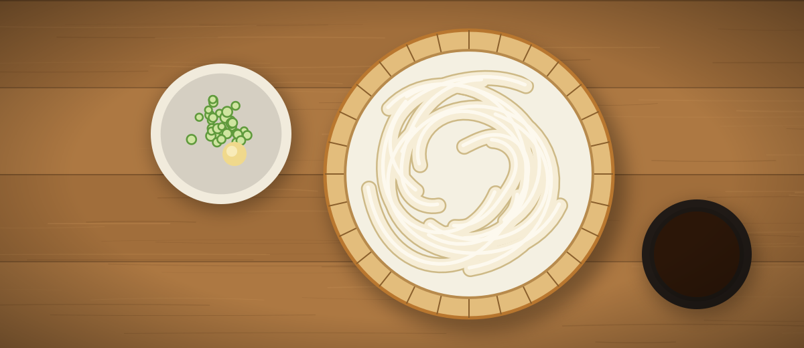

こだわり熟成うどんができるまで
うどんは、急ぐと
かたくなります。
豊史製麺は、待つことを
いちばんの仕事にしました。
- 13時間熟成庫で寝かせる時間
- 12℃熟成庫の温度
- 3つ材料は、小麦と塩と水だけ
- 8店すべての店に熟成庫
一杯ができるまで
前の日の夕方に仕込んだ生地が、翌日のお昼にうどんになります。
そのあいだの17時間を、図にしました。
壱
小麦は、二種類。
香りの強い粉と、
弾力の出る粉を、
季節ごとに配合します。
弐
一軒一軒に、熟成庫。
温度は十二度、
湿度は八割。
生地がいちばん眠れる部屋です。

参
茹でるのは、注文のたび。
寝かせた時間を、
最後の一分で
台無しにしないために。

寝かせ番たち
「寝かせ番」は、熟成庫を任された職人の呼び名です。
社内の検定で、一つ星から三つ星までの段位があります。
-
★★★三つ星寝かせ番
粉川 千代
豊史製麺 辻堂
「待つのも、仕事」
熟成庫の温度を0.5℃単位で見てきた、最古参。
-
★★二つ星寝かせ番
須田 豊史
豊史製麺 湘南台本店
「急がば、寝かせ」
創業者。毎晩いちばん最後に熟成庫の扉を閉める。
-
★★二つ星寝かせ番
出汁本 薫
豊史製麺 矢上
「いつでも、もっちり」
だしの担当も兼ねる、二刀流。
-
★一つ星寝かせ番
麦野 こはる
豊史製麺 日吉
「生地の声をきく」
手のひらで生地の張りを確かめる名人。
-
★一つ星寝かせ番
塩見 航
豊史製麺 三田
「昨日の自分に、今日勝つ」
塩水の濃さを、季節ごとに書き留める。
-
★一つ星寝かせ番
湯浅 大地
豊史製麺 藤沢
「ひと晩を、裏切らない」
茹で時間の秒数に、いちばんうるさい。
今日の一杯を、
探しに行こう。